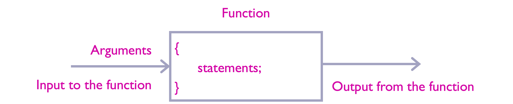
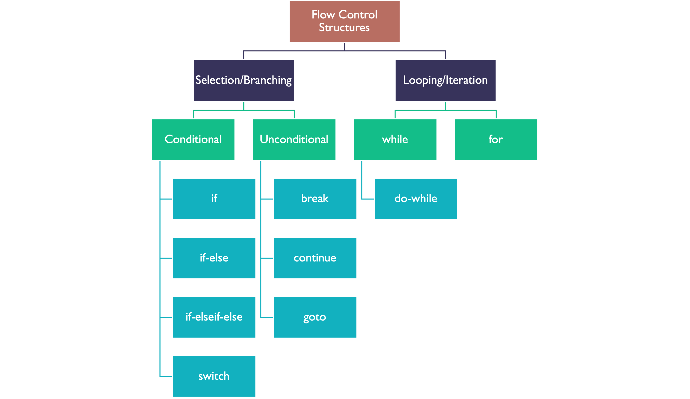
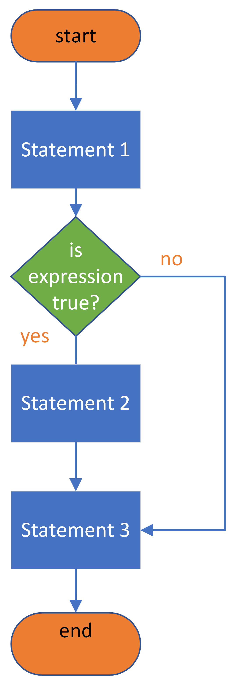
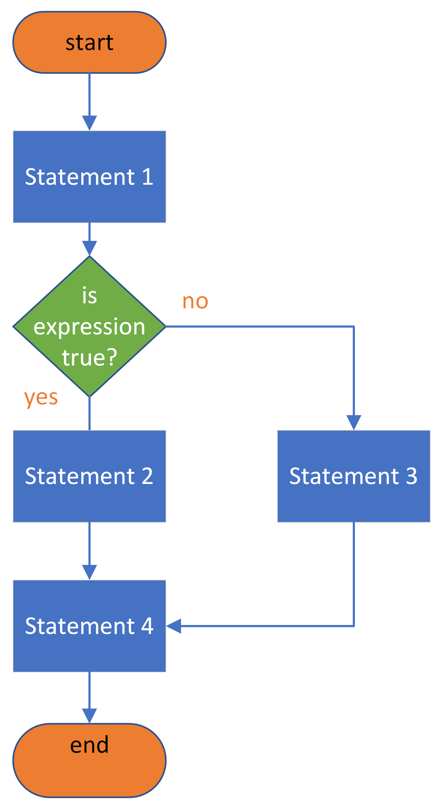
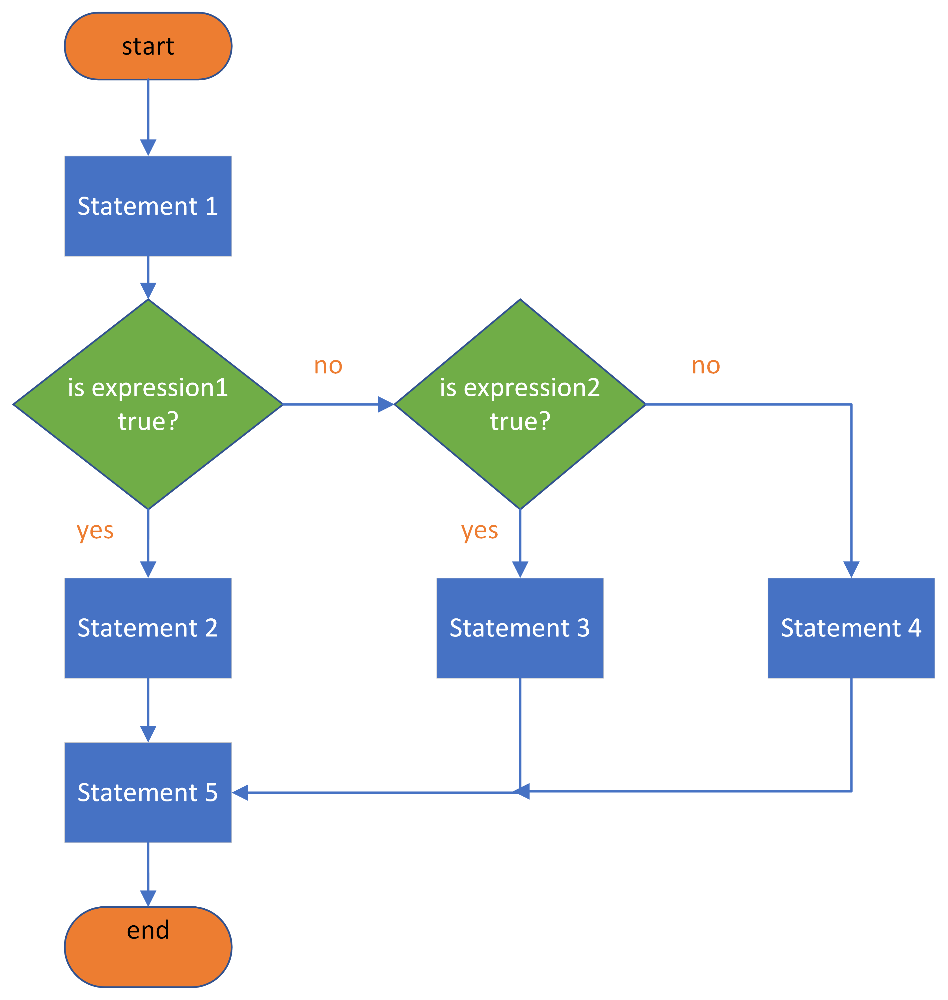
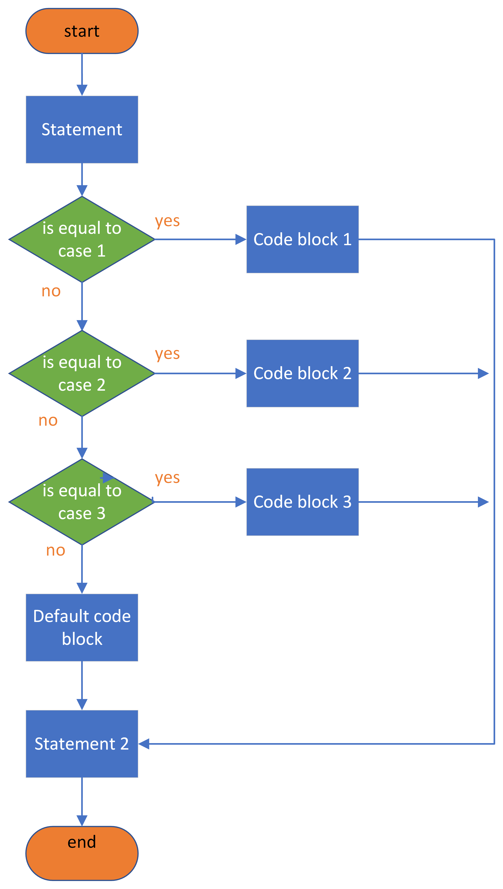
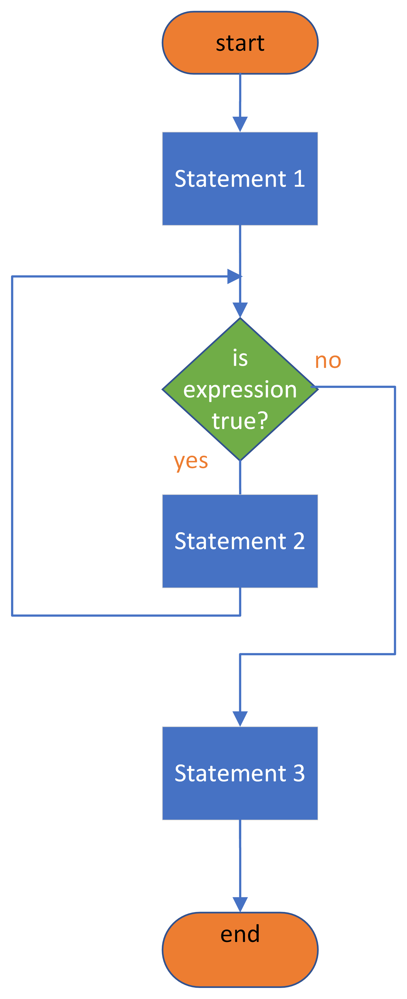
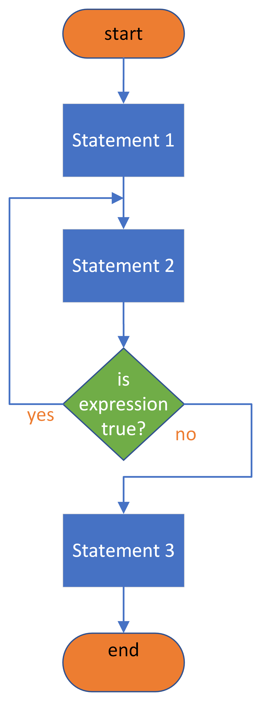
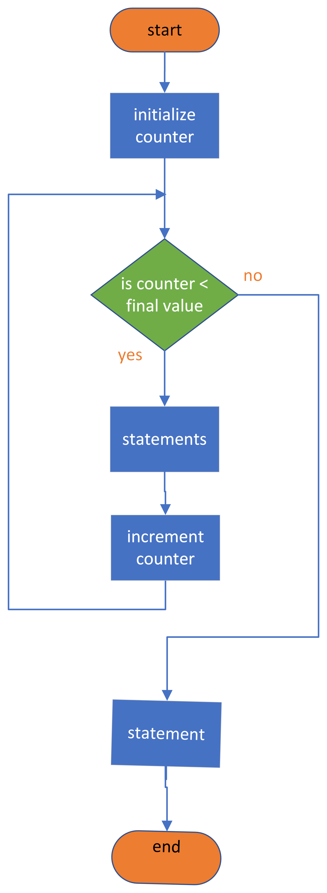
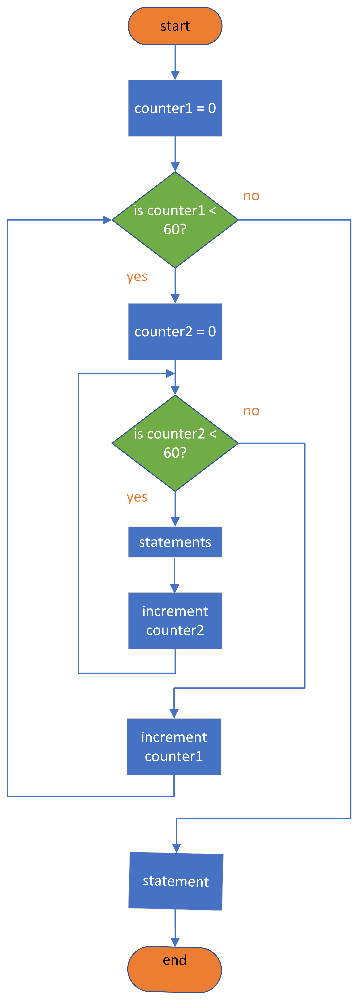

Introduction to Programming with C#

C is a high-level structured programming language which is often used for writing microcontroller applications. This weeks lecture will cover good coding practices, C language operators and how they can be grouped as well as flow control structures.

Lecture Topics#
In this chapter we will be looking at how to produce clear well commented programs; data transfer, arithmetic, logic and relational operators; and flow control structures including if, switch-case, for and while.
C-language#
Code Formatting, comments, pre-processor directives, statements and operators
Code formatting#
Write comments that explain what the program does?
Use descriptive names for variables and functions
Use tabs to indent nested code blocks
Give each class/function one purpose
Delete unnecessary/redundant code
Readability is more important than cleverness
Adopt and maintain a consistent coding style
Write good comments
Refactor, refactor, refactor
Take regular backups and implement version control
/*
This is a demonstration program for EG-151 microcontrollers that shows a tidy well commented program.
This program asks a user to input two numbers and uses the function findmax to determine which is the largest.
Author: Ben Clifford
Date: 12/10/2019
*/
// include library files
#include <stdio.h> //Required for scanf and printf
// main function
int main(void)
{
// Variable Declarations
int num1, num2, maxnum;
// Function Declarations
int findmax(int, int);
printf("Enter the first number: ");
scanf("%u", &num1);
printf("Enter the second number: ");
scanf("%u", &num2);
/* invoke the function findmax passing numl and num2
as arguments and storing the result in the variable maxnum
*/
maxnum = findmax(num1, num2);
printf("The maximum number is %u", maxnum);
}
// Definition of the findmax function
int findmax(int x, int y)
{
int maximum_number;
if (x >= y)
{
maximum_number = x;
}
else
{
maximum_number = y;
}
return maximum_number;
}
C language comments#
Comments are added to code in order to make the program easier to read and understand at a later time or by another reader.
When the compiler is reading the file, the comments are ignored.
Comments must follow a set of rules and a particular format.
In the ‘C’ language comments are surrounded by
/* comment*/and can span multiple lines or start with//if they are on a single line.
Examples of comments#
Single line comment \(\rightarrow\) typically found after a statement
A = 10; This line sets variable A to 10
Multi line comment \(\rightarrow\) typically used at the start of a program or to detail a block of code or a function
/* This comment
spans multiple lines */
Pre-processor directives#
The pre-processor is part of the compilation process and runs before the code is compiled.
The pre-processor looks for lines of code beginning with a
#and evaluates them before compilation.
There are also a number of predefined macros which can be called and these are surrounded by “
__” characters.
The most commonly used pre-processor directives, and also the ones we will be using, are
#includeand#define.
Some pre-processor directives#
#include
#define
#undef
#if
#elif
#endif
#ifdef
#ifndef
#error
__FILE__
__LINE__
__DATE__
__TIME__
__TIMESTAMP__
# macro operator
## macro operator
The #include directive#
The #include directive is used to include header files which contain declarations of existing and frequently used functions that can be substituted into your program.
Header files may contain custom function definitions, common functions, secondary data type definitions, etc.
/*
This variant is used for system header files.
The pre-processor searches for a file named in a
standard list of system directories
*/
#include <header_file.h`>
/*
This variant is used for header files of your own program.
It searches for the file name first in the current directory,
then in the same directories used for system header files.
*/
#include “my_library.h”
The #define directive#
The #define directive is used to define a macro – when the macro name appears in code it will be replaced with the definition stated.
Example: define a value for a symbol#
#define pi 3.1415
In this example the programmer is stating that the letters pi represent the number 3.1415. Now, in the program they can write
A = pi * r * r;
and after pre-processing the compiler will see
A = 3.1414 * r * r;
Example: define a block of reusable code#
#define cube(x) (x) * (x) * (x)
If the programmer writes:
v = cube(2) // = 8
The compiler sees:
v = (2) * (2) * (2) // = 8
Statements in C#
C functions are made up from statements, each of which is terminated with a semicolon ;.[1]
A statement is made up of at least one operator and some operands.
Operands can be variables or data.
C functions#
Fig. 52 is a schematic diagram of the C function. You can think of it as something that takes some inputs (arguments) and returns some output.
{kind=link}

Fig. 52 A schematic diagram of a function in C#
C code for a function#
A simple function is presented below.
/*
This function is called a_function.
It takes no aguments (inputs).
It returns no output.
*/
void a_function(void)
{
statement1;
statement2;
}
Variables in C#
The term variable is used for a name which describes a memory address. These names follow the same naming convention as used for functions[2].
For example, a variable named num1 describes a particular memory address at which the first number is found and a second variable num2 describes a second memory address while a third variable, total, is a third memory address.
In a function we may then have the following statements:
num1 = 10;
num2 = 20;
total = num1 + num2; // 30!
Each of the statements in the example above tells the computer system to assign/store a value into the memory address described by the variable. This is called assignment.
Assignment statements use the equals (=) sign to assign the value on the right of = to the variable on the left of =[3]
Operators in C#
Each statement or instruction is made up of operators and operands, where the operator represents an action and the operands represents the data.
In C, the operators can be split into four categories based on the type of actions that they perform[4].
They are:
We will consider each of these in the following sections.
Data transfer operators in C#
In the C language, the data transfer operations are mostly covered by assignment without ever having to deal directly with the registers.
For example:
a = 10;
b = 20;
sum = a + b;
PTFD = sum; // output total to PORT F
This is because C ia highs -level language and the compiler takes care of he details.
Arithmetic operators in C#
The order of arithmetic operations follow the BODMAS (BIDMAS) rules[5].
Operator |
Used for |
|---|---|
|
Addition |
|
Subtraction |
|
Multiplication |
|
Division |
|
Modulus |
|
Increment |
|
Decrement |
Examples#
Aassume a, b and c are defined as variable of type integer (int)[6].
a = r * 5 + 6 / 3; // -> a = 12;
Brackets can be used to improve readability[7]
b = (3.14 * r * r); // -> b = 12 not 12.56!
There are also special operators like increment and decrement
c = c++; // -> c = c + 1
d = d--; // -> d = d - 1;
Assume d to h are defined as type integer variables (int) and i as a floating point number (float):
d = 5 / 3; // -> d = 1: gives the whole part of the fraction
e = 5 % 3; // -> e = 2: gives thremainder of the fraction
f = 6 % 3; // -> f = 0: gives 0 as there is no remainder
g = 5.5 / 2; // -> g = 2: float is converted to int
h = 5.5 % 2; // -> invalid – will not compile
i = 5.5 / 2; // -> i = 1.75 - evaluates correctly if i is defined as a float
The same rules apply to multiplication operation.
Logical operators in C#
Logical operators are used in expressions which return true (1) or false (0).
Operator |
Meaning |
|---|---|
|
Logical and |
|
Logical or |
|
Logical not |
Example of the and operator (&&)#
/*
If the voltage is greater than 10 and the
current is less than 20 the condition is true
and the value of the expression will be 1,
otherwise it is false and the value of the
expression will be 0.
*/
if ((voltage > 10) && (current < 20)) {...}
Example of the or operator (&&)#
/*
If the voltage is greater than 10 or the
current is greater than 20 the condition is
true and the value of the expression will be
1, otherwise it is false and the expression
will be 0.
*/
if((voltage > 10) || (current > 20)) {...}
Example of the not operator (!)#
/*
The unary operator (!) is usually used to
turn true into false and vice versa.
*/
c = 0; // -> c = 0 which is "false"
d = !c; // -> d = 1 which is "true".
Bitwise logical operators in C#
In addition to the logical operators designed to evaluate multiple conditions there are bitwise logical operators which operate on the binary digits (bits) of their operands.
Operator |
Used for |
|---|---|
|
bitwise AND |
|
bitwise OR |
|
bitwise XOR |
|
bitwise NOT |
|
shift right |
|
shift left |
Example of the bitwise and operator#
b = 0xA3 & 0xD5; // -> b = 0x81
Example of the bitwise or operator#
c = 0xA3 | 0xD5; // -> b = 0xF7
Example of the bitwise not operator#
c = ~0xA3; // -> c = 0x5C
Bitwise operators used for I/O ports#
The use of these operators are important when working with microcontrollers, in particular in the case of I/O, as they can be used to mask bits of a port. This is useful in C as we have limited data transfer options, i.e. we have to read/write to an entire port (memory location) rather than an individual bit.
PTAPE = 0x0F; // bit pattern: 0000 1111
PTAD = 0xF0; // bit pattern: 1111 0000
PTAD = PTAD | 0x0C; // bit pattern: 1111 1100
Since XORing any bit with a 1 forces it to return the opposite value, it can be used to toggle the state of a port:
portA = portA ^ 0xFF; // e.g. 0101 0110 -> 1010 1001
Relational operators in C#
The final group of operators are the relational operators which are used to test a relationship between two variables or a variable and data.
Relational operator |
Meaning |
|---|---|
|
is equal to |
|
is not equal to |
|
is less than |
|
is less than or equal to |
|
is greater than |
|
is greater than or equal to |
Example: “is x equal to 2?” would be written as x == 2[8].
Relational operators are most often used in the expressions used in the conditions of the flow control structures discussed in Flow control.
Program control operators in C#
These are discussed in the next section Flow control.
Flow control#
Flow control statements if, for, while, and switch
Flow control structures in C#
Fig. 53 illustrates the flow control structures that are provided in the C language. We will illustrate the most commonly used[9] in the following sections.
{kind=link}

Fig. 53 Classification of the flow control strucures provided by the C language.#
Flow control structures to be considered#
The if statement in C#
The if statement allows branching within code and can be used to check if a particular condition has been met.
If the condition has been met, the set of statement in the following blocks is executed, if the condition is not met then the statement is not executed, and the program will branch over to the next statement outside of the flow control statement
The equivalent of the if statement illustrated in the Fig. 54 is:
Statement_1;
if (expression != 0) // in C anything that is not 0 is true
{
Statement_2;
}
Statement_3;
{kind=link}

Fig. 54 A flow chart illustrating the structure of the if statement#
The if-else statement#
The if-else statement allows one set of statements to be executed if the condition is met and another set of statements if the condition hasn’t been met.
The equivalent of the if-else statement illustrated in the Fig. 55 is:
Statement_1;
if (expression != 0) // in C anything that is not 0 is true
{
Statement_2;
}
else // expression is false == 0
{
Statement_3;
}
Statement_4;
{kind=link}

Fig. 55 A flow chart illustrating the structure of the if-else statement#
The if-elseif-else statement#
The third example of the if statement is the if-elseif-else statement which allows multiple conditions to be tested and blocks of statements to be executed for each decision.
The equivalent of the if-elseif-else statement illustrated in the Fig. 56 is:
Statement_1;
if (expression1) // expression1 is true
{
Statement_2;
}
elseif (expression2) // expression2 is true
{
Statement_3;
}
else // neither expression1 nor expression2 is true
{
Statement_4;
}
Statement_5;
{kind=link}

Fig. 56 A flow chart illustrating the structure of the if-elseif-else statement#
The switch statement in C#
The switch statement allows selection between several possible defined options.
The test condition is referred to as the expression and the choices are referred to as the cases[10].
Each switch expression will have a default choice for when no choices match the expression.
The switch statement represents an easier and more readable way of managing multiple if statements[11]
The equivalent of the switch statement illustrated in the Fig. 57 is:
Statement;
switch (expression1) // branch according to the value of the expression
{
case case_1 :
code_block_1;
case case_2 :
code_block_2;
case case_3 :
code_block_3;
// you can have any number of case statements
default : // optional
default_code_block;
}
Statement_2;
{kind=link}

Fig. 57 A flow chart illustrating the structure of the switch statement#
Example switch statement#
char student_grade = 'B';
printf("Your grade was %c: ",student_grade);
switch (student_grade)
{
case 'A':
printf ("excellent!\n");
break; // prevents fall-through to default
case 'B' :
printf("very good!\n");
break;
case 'C' :
printf("good!\n");
break;
case 'D' :
printf("satisfactory!\n");
break;
case 'E' :
printf("needs work!\n");
break;
case 'F' :
printf("sorry you failed!\n");
break;
default:
printf("Error! The grade %c is invalid\n",student_grade);
}
If the break was not present, the program would drop down to the next case which is not usually what you want. Instead, you usually break out to the case statement as soon as a valid match is made.
You can play with this program here: grader. See what happens when you remove break.
The while statement in C#
In order to write a function that loops, i.e. execution of a sequence of statements until a particular condition is met, a while statement can be used.
The while statement allows for a block of statements to be repeatedly executed as long as a condition is true.
The equivalent of the while statement illustrated in the Fig. 58 is:
while (condition)
{
statements;
}
{kind=link}

Fig. 58 A flow chart illustrating the structure of the while statement#
The do-while statement#
The do-while statement is almost identical to the while statement however the condition is checked after the statements have run.
The equivalent of the do-while statement illustrated in the Fig. 59 is:
do
{
statements;
}
while (condition);
{kind=link}

Fig. 59 A flow chart illustrating the structure of the do-while statement#
Be careful: it is very easy to get stuck in an infinite while loop if your test condition is always true.
The for statement in C#
Another way of writing a while statement is to use a for loop.
The term loop is used for the execution of a sequence of statements until a particular condition is met.
The equivalent of the for statement illustrated in the Fig. 60 is:
for (initialize counter; counter < final value; increment counter)
{
statements;
}
statement
{kind=link}

Fig. 60 A flow chart illustrating the structure of the for statement#
Example for loop#
Here is an actual for loop which solves the problem given in Example 2: Decision and a Loop it better illustrates how it might be written in a real program:
int sum, x;
/* Add the numbers from 1 to 10 and print the sum */
for (x = 0; x < 11; x++)
{
sum = sum + x;
}
printf("sum = %d", sum);
The sequence performed by the for loop is:
The variable
xis initialized to 0;
The statements in the block[12] are executed in sequence;
xis incremented by 1 (x++\(\rightarrow\)x = x + 1);
The value of the logical expression
x < 11is evaluated: if it is true we return to step 2.
If
x < 11is false (i.e.x == 10) the loop ends the result is printed to the screen.
To execute this program see sum.c.
Equivalence of for and while#
You can always write a for loop using while[^for-while]. The previous example could be written:
int sum, x;
// initialize x
x = 0;
while (x < 11)
{
sum = sum + x;
x++; // increment x
}
printf("Sum = %d",sum);
See sum with while.
It is arguable that the for loop is easier to read and understand.
[for-while]: Indeed most c-compilers produce equivalent code for for and while.
Nested for statements#
The equivalent of the nested for statement illustrated in the Fig. 61 is:_
for (counter1 = 0; counter1 < 60; counter1++)
{
for (counter2 = 0; counter2 < 60; counter2++)
{
statements;
}
}
{kind=link}

Fig. 61 A flow chart illustrating the structure of the nested for statement#
See nested-counter for an executable example of this program.
What could you use it for?
Summary#
In this section we have:
Covered basic concepts in coding to create clear and concise code as well as how to add comments to key lines of a program.
Introduced and discussed the different operators available to the C language programmer including how they are categorized.
Looked at the flow control statements available in the C language as well as how they are represented using flowchart diagrams and examples of the required syntax.
On Canvas#
On the canvas course page, there is a series of short videos providing a history of the C language and a brief overview of programming paradigms as well as videos on functions and data type with a quiz to test your knowledge